Osobní profilLesník z moravsko-slovenského pomezí
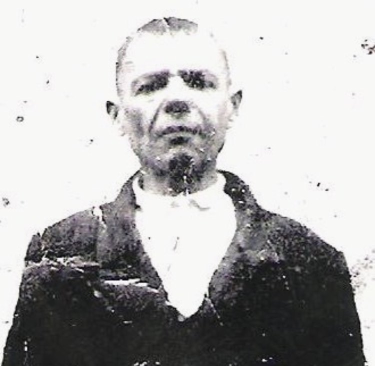
Josef Janovský se narodil 1. října 1891 v příhraniční obci Strání (okres Uherský Brod, dříve Uherské Hradiště) na moravsko-slovenském pomezí. Pocházel z domu čp. 91; byl synem domkáře Josefa Janovského staršího a Anny rozené Zajglové. Jeho matka Magdalena byla dcerou Martina Popelky, čtvrtníka ve Strání. V dobových dokladech je Janovský veden jako „půlčtvrtník“ (drobný rolník) a hajný ve Strání. Byl římským katolíkem a před válkou se hlásil k československé sociální demokracii.
S manželkou Magdalenou (rozenou Popelkovou) měl několik dětí — syny Martina, Josefa, Jana a Antonína a dcery Marii a Anežku. Nejstarší syn Martin se za války rovněž zapojil do převaděčské činnosti na hranici. Janovský pracoval jako obecní hajný (v německých záznamech „Waldheger“) a jako lesní dělník přímo na hranici v Bílých Karpatech. Dokonalá znalost zdejšího terénu se po nacistické okupaci v roce 1939 stala základem jeho odbojové činnosti.
- Narození1. října 1891, Strání čp. 91, okres Uherský Brod
- PovoláníObecní hajný a lesní dělník
- RodinaManželka Magdalena roz. Popelková; děti Martin, Marie, Anežka, Josef, Jan a Antonín
- OdbojPodzemní vojska lidové armády „VELA“ — východní Morava a Slezsko
- ÚmrtíPopraven 4. února 1942, Linec (KT Mauthausen)
Rakousko-uherská armádaZa první světové války
Josef Janovský sloužil za první světové války jako vojín pěchoty (Infanterist) u c. a k. pěšího pluku „Arcivévoda Karel“ č. 3, u 16. setniny. Pluk se doplňoval z Kroměřížska a jeho mužstvo tvořili převážně Moravané; v letech 1914–1915 byl nasazen na východní frontě v Haliči a v Karpatech.
Josef byl raněn střelou do krku (Schuß in den Hals). Podle všeho k tomu došlo během karpatských bojů v zimě 1914/15; léčil se v c. a k. válečné nemocnici v Budapešti (Soroksári út), kam byli evakuováni ranění z východní fronty. Jeho jméno bylo uvedeno v rakousko-uherském seznamu ztrát („Nachrichten über Verwundete und Verletzte“) vydaném 9. března 1915. Zranění přežil a vrátil se domů do Strání.
Pramen: c. a k. seznam ztrát („Nachrichten über Verwundete und Verletzte“), 9. března 1915, s. 21 — c. a k. pěší pluk „Arcivévoda Karel“ č. 3, 16. setnina. Datum a místo zranění jsou odvozeny z bojové cesty pluku a z evakuace raněných do Budapešti.
Domácí odbojOrganizace VELA
Josef Janovský se zapojil do odboje již v roce 1939 ve Strání; podle pozůstalostních materiálů jej získal jeho bratr František Janovský. Stal se příslušníkem podzemních vojsk lidové armády „VELA“, působících v prostoru východní Moravy a Slezska.
Jeho hlavním úkolem bylo převádět přes střeženou hranici Protektorátu na Slovensko československé občany — vlastence a dobrovolníky, kteří se chtěli dostat do zahraničního odboje. Tuto činnost umožňovala právě jeho práce hajného a důvěrná znalost lesních přechodů.
Tato činnost nebyla ojedinělá a zapadala do širší převaděčské sítě na moravsko-slovenském pomezí, navázané na odbojovou organizaci Obrana národa. Ve Strání se kolem převaděče Vítězslava Klímy-Kiena vytvořila celá skupina, která zajišťovala úkryty a podmínky k převádění uprchlíků přes hranici v úseku Strání–Květná. Podle studie historičky Miroslavy Polákové patřili k jejím spolupracovníkům od počátku okupace mimo jiné Josef Kohn, František Neškera, Ondřej Jankových a také Martin Janovský, Janovského nejstarší syn, a jeho bratr František Janovský.
Touto cestou se na Slovensko a dále přes Maďarsko a Turecko dostávali lidé směřující do zahraniční armády i pronásledovaní židovští uprchlíci z uherskobrodského ghetta. Práce hajného a důvěrná znalost lesních přechodů z něj činily jeden z klíčových článků tohoto řetězu.
„Potvrzujeme, že byl členem podzemních vojsk lidové armády (»Vela«) pro východní Moravu a Slezsko. Osvědčujeme současně, že rozkazy plnil přesně, statečně a s plnou oddaností odboji.“ — Poválečné osvědčení organizace VELA, potvrzené vrchním politickým komisařem a vrchním velitelem
PronásledováníZatčení, stanný soud a konfiskace
Josef Janovský byl 3. září 1941 zadržen německou pohraniční hlídkou přímo při převádění osob přes hranici u celního úřadu. Po vyšetřovací vazbě v Uherském Hradišti byl předán brněnskému gestapu.
Dne 17. listopadu 1941 nad ním v Brně vynesl německý stanný soud (Standgericht der Staatspolizeileitstelle Brünn) nekompromisní rozsudek. Janovský byl přitom zatčen již 3. září 1941, tedy ještě před vyhlášením civilního výjimečného stavu (28. září 1941), podle něhož byl následně odsouzen. Stíhání tak postrádalo zákonný podklad i podle samotných nacistických předpisů a mělo zpětnou účinnost.
- Soudní senát: SS-Sturmbannführer, vládní rada Ebert (předseda), SS-Untersturmführer kriminální sekretáři Preßlauer a Regelsberger (přísedící).
- Obvinění: zločin narušení veřejné bezpečnosti podle § 3 a § 4 nařízení Říšského protektora o civilním výjimečném stavu z 27. 9. 1941.
- Skutek: soustavné převádění osob přes hranici (v rozsudku „fortgesetzter Menschenschmuggel“).
- Výrok: předání tajné státní policii (gestapu), zabavení veškerého majetku, rozsudek označen za nezvratný (unanfechtbar).
Na základě rozsudku byly zablokovány a zabaveny jeho úspory — vklady u Pražské městské spořitelny (Prag I, Rittergasse 536) a u Záložny Vinohradské (Weinberger Vorschusskasse, Irská 22). Zablokování majetku proběhlo na přelomu let 1941 a 1942 prostřednictvím Ústředního svazu peněžnictví v Čechách a na Moravě.
Soudci stanného soudu
Senát stanného soudu, jenž Janovského odsoudil k trestu smrti, tvořili příslušníci SS, představitelé brněnské řídící úřadovny gestapa, v jejímž vedení se policejní a esesácký aparát zcela prolínaly.
- Hermann Ebert (předseda senátu) — SS-Sturmbannführer a vládní rada, v letech 1941–1943 zástupce vedoucího brněnské řídící úřadovny gestapa. Narozen roku 1911 v Lipsku. Jeho kariéra se zastavila na hodnosti vládního rady; po válce nebyl souzen.
- Josef Regelsberger (přísedící) — SS-Untersturmführer, kriminální sekretář, vedl referát kartoték brněnského gestapa. Rakušan, do NSDAP vstoupil již v dubnu 1931 („starý bojovník“). Při důstojnické zkoušce SS dostala jeho hlavní písemná práce na téma „1918 a 1943“ nejhorší možnou známku s posudkem „Téma nepochopil“; jeho vzdělání tvořilo pouhých pět tříd obecné školy. Důstojnickou hodnost získal patrně hlavně díky stranickým zásluhám.
- Preßlauer (přísedící) — SS-Untersturmführer, kriminální sekretář. Bližší údaje o něm se v dostupných pramenech nedochovaly.
Nadřízeným celé úřadovny byl Wilhelm Nölle (nar. 1904), vedoucí brněnského gestapa. Také jeho kariéra ilustruje poměry uvnitř aparátu: na vládního radu byl povýšen po pouhých sedmi měsících, v rozporu s tehdejšími předpisy. Po válce nebyl potrestán, ačkoli jej československá komise pro stíhání válečných zločinců vedla ještě v roce 1967.
Závěr cestyKoncentrační tábor Mauthausen
Josef Janovský byl deportován do koncentračního tábora Mauthausen. Táborový seznam příchozích (Liste der Zugänge) jej zaznamenává mezi vězni přijatými 4. prosince 1941, pod vězeňským číslem 1153 a označením „Arbeiter“. Jeho jméno se objevuje i v táborových „seznamech zemřelých“ (Totenlisten).
Podle českých i rakouských archivních dokladů byl 4. února 1942 popraven v Linci (v rámci komplexu Mauthausen). Jeho pozůstalost byla pro nedostatek jmění odbyta u Okresního soudu v Uherském Brodě dne 20. března 1942.
- 1939, StráníVstup do odboje (organizace VELA)
- 3. září 1941Zatčen pohraniční hlídkou při převádění přes hranici
- 17. listopadu 1941, BrnoOdsouzen stanným soudem, předán gestapu
- 4. prosince 1941Přijat do KT Mauthausen — vězeň č. 1153
- 4. února 1942, LinecPopraven
Po válcePosmrtné uznání
Za nejvyšší oběť byl Josefu Janovskému prezidentem republiky udělen Československý válečný kříž 1939 „In memoriam“, datovaný v Praze dne 8. dubna 1946 (číslo matriky 21.202).
Na žádost syna Antonína Janovského (nar. 1933, Starý Hrozenkov 76) z roku 1995 vydalo Ministerstvo obrany ČR dne 1. února 1996 (č. j. 318244/1995) potvrzení podle zákona č. 255/1946 Sb. Josef Janovský byl v něm úředně uznán československým politickým vězněm v době od 3. září 1941 do 4. února 1942.
„…byl popraven v Linci dne 4. února 1942. Jeho pozůstalost byla u Okresního soudu v Uherském Brodě pro nedostatek jmění odbyta dne 20. března téhož roku.“ — Archivní výpis, Státní okresní archiv Uherské Hradiště, 1995
ArchivHistorické dokumenty
Archivní materiály dokládající odbojovou činnost, soudní proces, deportaci a poválečné uznání. Kliknutím na náhled zobrazíte dokument v plné velikosti.

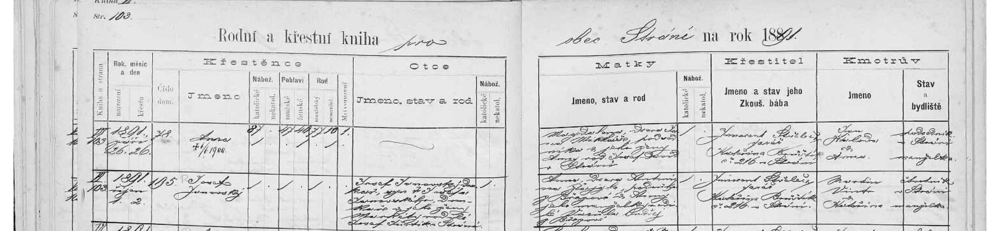
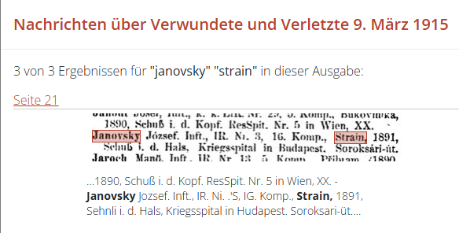
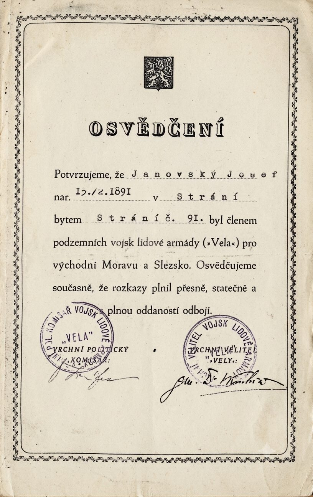
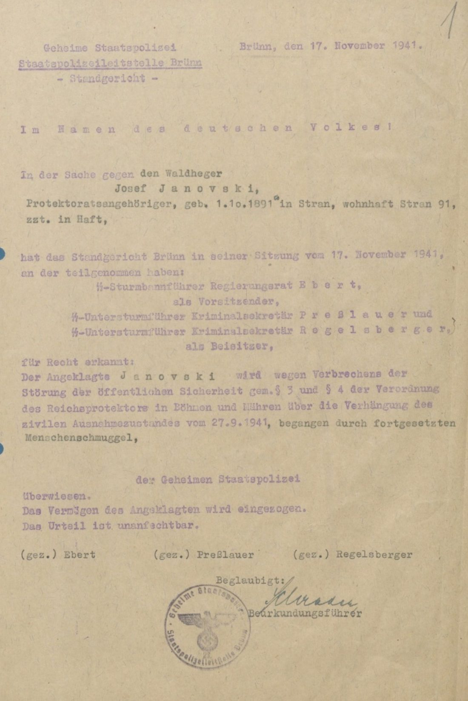
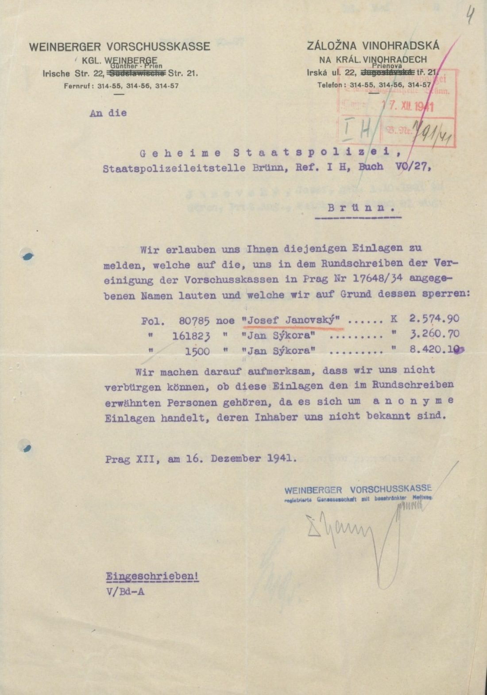
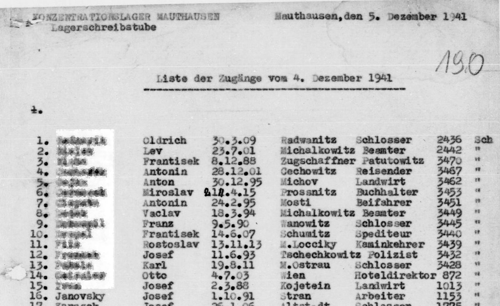
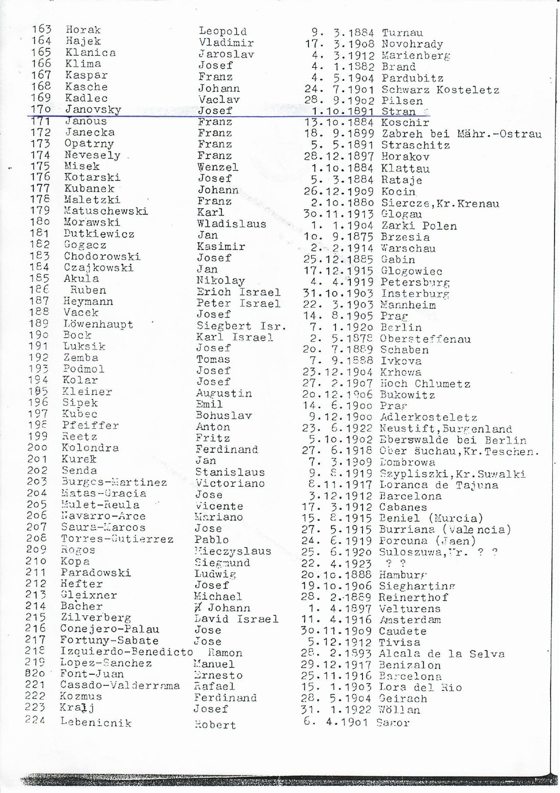
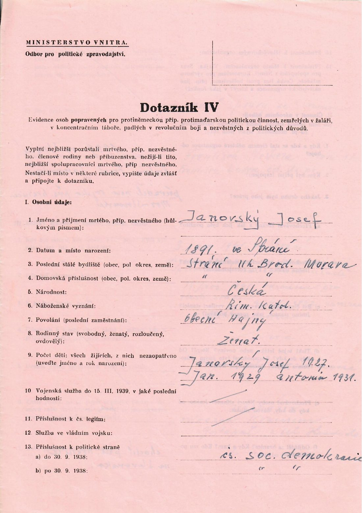
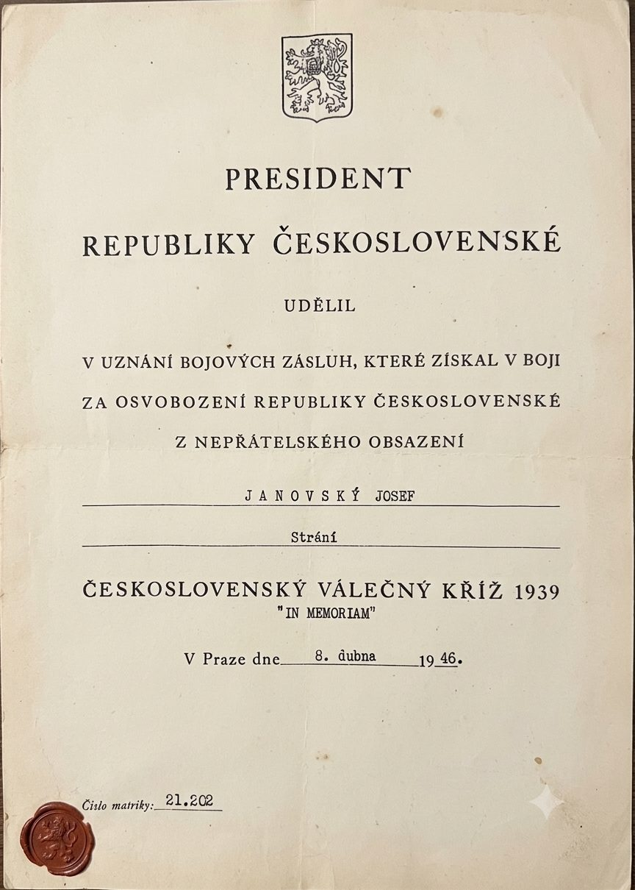
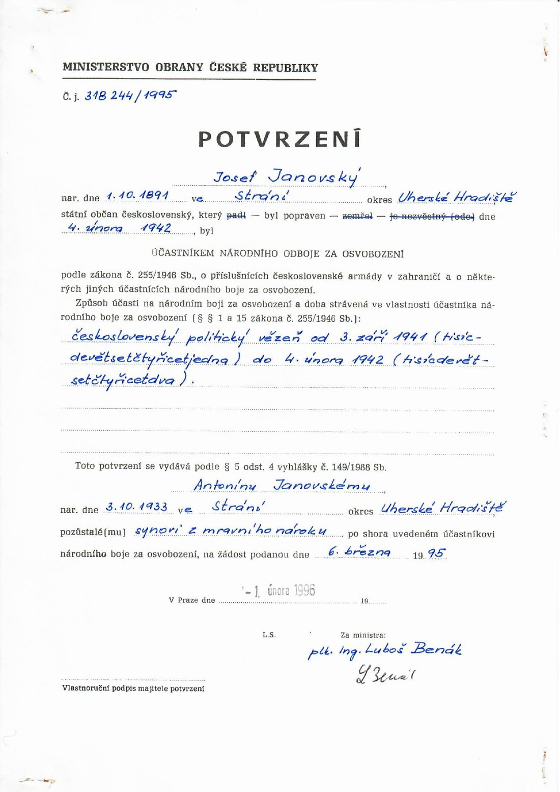
Úplné spisyArchivní složky k nahlédnutí
Kompletní digitalizované spisy lze prolistovat přímo zde, nebo otevřít na celou obrazovku a stáhnout. Sken pořízen z originálů uložených ve Vojenském ústředním archivu (osvědčení podle zákona č. 255/1946 Sb.).